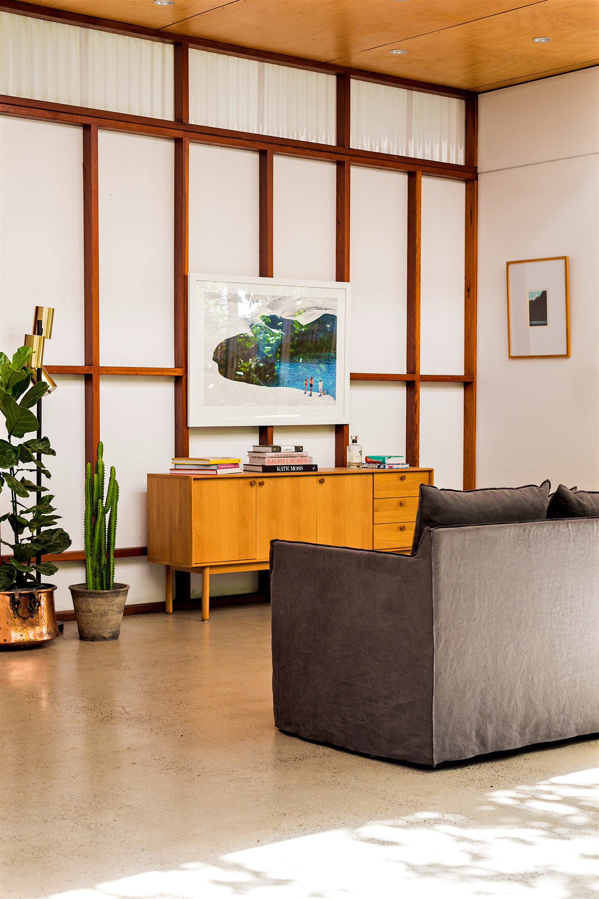

Los Angeles
Forward Architects specializes in residential architecture in a variety of scales along with a multitude of civic and cultural projects to boast in its portfolio. One of the main philosophies of the firms practice is a well-rounded design experience that covers all aspects of both the architectural exterior and interior. The firm boasts an extensive fabrication studio that allows designers to work with clients on one-off furniture or sculptural pieces that integrate architectural design elements used on the exterior of the project and replicate them on a smaller more intimate scale within the structure.